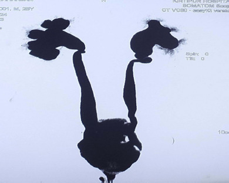
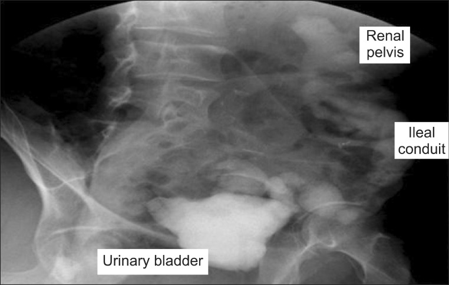
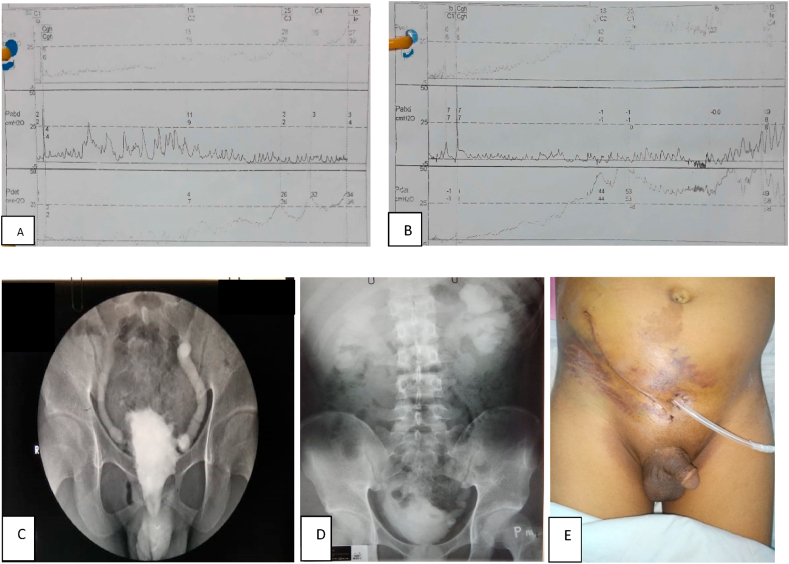

189 — Đánh giá tiết niệu trước ghép thận ở bàng quang thần kinh & bàng quang tái tạo / Pre-transplant urological assessment in neurogenic and reconstructed bladder
Tags: pattern:danh-gia-truoc-ghep pattern:bang-quang-ap-luc-cao vung:tiet-nieu vung:than-ghep protocol:video-nieu-dong score:DUDi anatomy:bang-quang-than-kinh
Mức chắc chắn (certainty): tổng hợp y văn (literature synthesis) — cohort quốc gia/đa trung tâm + nghiên cứu niệu động học + review CAKUT; mọi con số gắn PMCID, ảnh CC có giấy phép từng file.
1. Tổng quan bệnh học – cơ chế hình ảnh
- Vì sao đường tiết niệu dưới là “cửa sinh tử” của thận ghép: thận ghép không có van chống trào hiệu quả tuyệt đối và chỉ chịu được áp lực bể thận thấp. Một bàng quang kém chun giãn (low-compliance), áp lực cao, trào ngược (VUR) hoặc tắc nghẽn sẽ truyền áp lực ngược lên mảnh ghép → ứ nước, viêm thận–bể thận tái phát, sẹo và mất thận ghép. Đây là lý do bệnh nhân bàng quang thần kinh (neurogenic bladder — NB) phải được đánh giá và tối ưu hóa đường tiết niệu TRƯỚC khi vào danh sách ghép, không phải sau.
- Quy mô vấn đề: tại Mỹ, 6% ca ghép thận có chỉ định là bệnh thận giai đoạn cuối do bất thường đường tiết niệu dưới; 0,7–2,3% ca ghép được làm trên bệnh nhân có ống dẫn niệu kiểu ileal conduit (Halskov ACL và cs, Investig Clin Urol 2026;67:392-401, PMC13351179).
- Kết cục không tệ như định kiến cũ: cohort quốc gia Đan Mạch 2000–2021 gồm 25 bệnh nhân/26 thận ghép (ileal conduit hoặc continent cutaneous 9; Mitrofanoff + tăng cường bàng quang 8; Mitrofanoff không tăng cường 6; chỉ tăng cường bàng quang 2): sống còn bệnh nhân 10 năm 91,7%, sống còn mảnh ghép 10 năm 85,5%. Biến chứng sớm: nhiễm trùng tiểu (UTI) 10, tụ dịch quanh mảnh ghép 7, chảy máu 6, nhiễm khuẩn huyết 4, tắc niệu quản 4. Biến chứng muộn: UTI tái phát 18, áp-xe/nhiễm trùng liên quan mảnh ghép 11, ứ nước 6 (PMC13351179).
- Nhóm phức tạp nhất: 37 bệnh nhân từ 8 trung tâm (Đức): nguyên nhân suy thận gồm trào ngược 24%, spina bifida 22%, viêm cầu thận 12%; 32% phải sửa đường tiết niệu ngay trong mổ ghép; sống còn mảnh ghép 5 năm 79%, sống còn bệnh nhân 5 năm 89%; biến chứng sau mổ 19% (Flegar L và cs, World J Urol 2024;42:239, PMC11023965).
- Sau ghép, biến chứng tiết niệu có “lịch” riêng: 178 trẻ ghép thận, 15,7% có biến chứng tiết niệu; 61% có bệnh niệu trước đó; 13,4% cần can thiệp nội soi/mổ. Giai đoạn 7–30 ngày: tắc nối niệu quản–bàng quang và tụ dịch quanh thận; 1–3 tháng: hẹp niệu quản, VUR có triệu chứng, lymphocele gây tắc; > 3 tháng: VUR, hẹp niệu quản (có ca đứt niệu quản). Sửa VUR nội soi thành công 75% (Sangermano M và cs, Medicina 2024;60:1754, PMC11597008).
- TẠI SAO hình ảnh thay đổi — vật lý & mô học:
- Bàng quang áp lực cao → cơ detrusor phì đại, dày thành, trabeculation, túi thừa (diverticula); trên CT/MRI thành bàng quang dày không đều, bè cơ nổi rõ; trên siêu âm thành dày > 3 mm gợi ý.
- Trào ngược làm niệu quản giãn, lượn khúc (hydroureter); khi nhiễm trùng lặp lại, nhu mô thận mỏng và sẹo → DMSA là chìa khóa chức năng, không phải CT.
- Bàng quang tái tạo bằng ruột tiết chất nhầy (mucus) — trên siêu âm/CT giả “cặn/dị vật”, dễ đọc nhầm sỏi; đoạn ruột cũng hấp thu Cl⁻/NH₄⁺ gây toan chuyển hóa tăng Cl⁻ và mất xương, nên theo dõi khí máu/B12 là một phần của “hình ảnh chức năng”.
- Sau ghép: lymphocele là tụ dịch không ngấm thuốc, thành mỏng, ở dưới/ngoài mảnh ghép; urinoma là tụ dịch có creatinine cao gấp nhiều lần huyết thanh — siêu âm không phân biệt được, phải chọc hút hoặc CT có cản quang thì muộn.
- Creatinine “bình thường” không có nghĩa là chức năng thận bình thường ở NB: bệnh nhân teo cơ chi dưới có khối cơ thấp → creatinine thấp giả → eGFR theo creatinine cao giả. Trong 47 trẻ NB (59,6% có myelomeningocele), dùng phương trình CKiD-CysC làm 68% bệnh nhân chuyển sang giai đoạn CKD nặng hơn; ở nhóm không đi độc lập, eGFR theo creatinine cao hơn có ý nghĩa (Menezes C và cs, Cureus 2023;15:e42337, PMC10444205).
2. Mẫu hình + chẩn đoán phân biệt theo vị trí (gamut)
- Bàng quang gốc (native bladder) — NB: pattern “bể chứa áp lực cao”: dung tích nhỏ, compliance thấp, detrusor overactivity (DO) hoặc underactivity (DU), detrusor–sphincter dyssynergia, tồn lưu. Hình ảnh: thành dày, trabeculation, túi thừa, ứ nước hai bên; trực tiếp đánh giá bằng video-niệu động học (videourodynamics).
- Bàng quang tăng cường bằng ruột (augmentation cystoplasty): pattern “bể chứa + đoạn ruột”: sỏi 10–52%, thủng tự phát 1,9–4,5%, ung thư tại đoạn ruột 1,2–4,5% sau > 10 năm (bài 672). Trước ghép cần loại sỏi, túi thừa lớn, hẹp cổ bàng quang, VUR.
- Ống dẫn niệu (ileal conduit / continent cutaneous): pattern “đường thoát ra da”: hẹp miệng nối niệu quản–ruột (thường ở 1/3 dưới niệu quản trái), thoát vị cạnh lỗ thông (parastomal hernia) gây gập ống, sỏi trong quai ruột, hẹp lỗ thông.
- Bàng quang thay thế (neobladder) / Mitrofanoff: pattern “bể chứa không sinh lý”: hẹp lỗ thông Mitrofanoff (bài 3001 dự kiến), sỏi bể chứa, trào ngược lên mảnh ghép, rò.
- Mảnh ghép (graft): ứ nước do (1) VUR, (2) hẹp nối niệu quản, (3) chèn ép (lymphocele, hematoma, urinoma), (4) sỏi/sản phẩm đông; tụ dịch quanh thận (lymphocele vs urinoma vs áp-xe); sỏi thận ghép; áp-xe quanh mảnh ghép.
- Đường tiết niệu trên: ứ nước–niệu quản, sẹo nhu mô, sỏi, bàng quang thần kinh “hình quả thông” (pine-cone bladder) khi tăng áp lực mạn.

CT urogram (MIP) ở bệnh nhân bàng quang thần kinh do bất sản xương cùng: hai niệu quản giãn–lượn khúc, bể thận ứ nước, bàng quang hình “quả thông” co nhỏ — đúng bệnh cảnh phải tối ưu trước khi ghép. Nguồn: Khanal S và cs, JNMA 2025;63(292):914-917 (PMC12906750), Fig. 1, CC BY 4.0 — ảnh nguyên bản.3. Bảng so sánh phân biệt (ma trận đối chiếu)
| Thực thể (entity) | Hình ảnh/lâm sàng điển hình | Chốt vào (rule-in) | Chốt loại (rule-out) | Gợi ý xác nhận |
|---|---|---|---|---|
| Bàng quang kém chun giãn (LCB) | Dung tích nhỏ, áp lực đổ đầy tăng nhanh; thành dày, trabeculation; són/ứ nước | Compliance < 12,5 mL/cmH₂O + áp lực đổ đầy cuối cao | Dung tích bình thường + compliance > 20 mL/cmH₂O + không ứ nước → không phải LCB | Niệu động học (cystometry) chuẩn hóa tốc độ làm đầy |
| Bàng quang tăng áp lực có VUR | Ứ nước–niệu quản, bể thận giãn; VUR khi bơm cản quang | VUR thấy trên VCUG/video-niệu động + ứ nước cùng bên | Niệu quản không giãn + không trào ngược khi làm đầy đủ → loại VUR đáng kể | VCUG thì đi tiểu / video-niệu động |
| Bàng quang tăng cường có sỏi | Cặn lắng, bóng cản quang; đau, UTI tái phát | Sỏi cản quang trong bể chứa + chất nhầy | Chỉ chất nhầy di động, không cản quang, không ứ nước → không mổ | CT không cản quang lát mỏng; siêu âm |
| Hẹp miệng nối niệu quản–ruột (conduit) | Ứ nước mảnh ghép/thận còn lại, conduit xẹp | Hẹp khu trú + giãn trên chỗ hẹp trên CT/MRU | Giãn lan tỏa do gập ống/thoát vị → xử trí khác | CT urogram/MRU + soi ống dẫn niệu |
| Thoát vị cạnh lỗ thông | Khối cạnh stoma, quai ruột chứa ống dẫn niệu bị gập | Túi thoát vị chứa quai dẫn niệu + ứ nước khi nằm/đứng | Không có khối, ống thẳng → loại | CT bụng–chậu có đánh dấu stoma |
| Ứ nước mảnh ghép do VUR | Ứ nước khi bàng quang căng, giảm khi làm rỗng | Ứ nước tăng khi bàng quang đầy, giảm sau CIC | Ứ nước cố định không đổi → nghĩ hẹp/chèn ép | Siêu âm trước–sau làm rỗng + VCUG |
| Lymphocele quanh mảnh ghép | Tụ dịch hình thấu kính, thành mỏng, dưới/ngoài thận ghép | Dịch đồng dạng, không ngấm, không vôi hóa; chèn ép gây ứ nước | Dịch có creatinine cao = urinoma; dịch có khí/ngấm = áp-xe | Siêu âm + CT cản quang; chọc hút sinh hóa |
| Áp-xe quanh mảnh ghép | Sốt, đau, tụ dịch thành dày | Thành dày ngấm thuốc + khí trong dịch | Tụ dịch đơn thuần không ngấm → lymphocele | CT cản quang; chọc hút cấy |
| Sẹo thận do trào ngược | Nhu mô mỏng, đài thận biến dạng, thận nhỏ | Sẹo vỏ thận khu trú + tiền sử UTI/VUR | Thận đều, không sẹo → loại | DMSA (chức năng), không phải CT |
Ảnh chốt: bàng quang tái tạo + thận ghép trên phim cản quang

Cystogram sau mổ: cản quang ở bể thận của thận ghép (renal pelvis) → đoạn hồi tràng (ileal conduit) → bàng quang đã tăng cường (urinary bladder); không rò. Dung tích bàng quang tăng từ 50 mL lên 300 mL sau tăng cường — minh họa đích của “tối ưu bể chứa trước ghép”. Nguồn: Chin C và cs, Korean J Urol 2013;54(2):143-146 (PMC3580306), Fig. 4, CC BY-NC 3.0 — giữ nguyên bản.4. Protocol chụp + hệ phân độ/điểm chuẩn hóa
4.1 Trước ghép — thứ tự bắt buộc
- Xét nghiệm: creatinine và cystatin C (eGFR theo cystatin C ở NB teo cơ), điện giải, khí máu (nếu có đoạn ruột), nước tiểu + cấy trước mọi can thiệp.
- Siêu âm thận–bàng quang: ứ nước, độ dày thành, sỏi, tồn lưu; đo dung tích và thành bàng quang.
- Video-niệu động học (videourodynamics): đo dung tích cystometric, compliance, áp lực detrusor, DLPP (detrusor leak point pressure), VUR khi bơm, khả năng CIC (clean intermittent catheterization).
- VCUG nếu nghi VUR; DMSA đánh giá sẹo; MAG3 khi cần phân biệt tắc nghẽn–chức năng; CT urogram/MRU khi cần giải phẫu (niệu quản, conduit, túi thừa).
- Hội chẩn niệu–ghép–phục hồi chức năng: quyết định CIC, antimuscarinic, botulinum toxin, tăng cường bàng quang, vesicostomy trước hay cùng lúc với ghép.
4.2 Ngưỡng định lượng phải nhớ
- Compliance thấp (LCB) định nghĩa < 12,5 mL/cmH₂O; tỷ lệ LCB ở bệnh nhân bệnh thận giai đoạn cuối 30–50% (Tangpaitoon T, Swatesutipun V, Int Urol Nephrol 2023;55:75-84, PMC9616423).
- DUDi score (Duration of RRT – Urine volume/day – Diabetes) dự báo LCB: AUC 0,87 (95% CI 0,81–0,92); ≤ 3 điểm → xác suất LCB ~10% (không cần niệu động học), 4–5 điểm → cá thể hóa, ≥ 6 điểm → làm niệu động học. Lưu ý: mô hình xây trên bệnh nhân chưa biết bệnh đường tiết niệu dưới, không dùng thay cho đánh giá ở NB đã biết (PMC9616423).
- DLPP > 40 cmH₂O là ngưỡng “nguy hiểm” kinh điển (McGuire); nhưng ở trẻ NB, DLPP > 20 cmH₂O nhạy hơn cho ứ nước đường tiết niệu trên, và ΔPdet > 25 cmH₂O ở cuối thì đổ đầy có độ nhạy 85%, độ đặc hiệu 77%; compliance < 8 mL/cmH₂O ở giữa/cuối thì đổ đầy đặc hiệu hơn ngưỡng < 9 mL/cmH₂O (Lyu L và cs, Int Neurourol J 2022;26:52-59, PMC8984689).
- Phản biện (Argon cửa 3): compliance đo bằng ΔV/ΔP bỏ qua cơn co detrusor và độ cong của đường áp lực–thể tích; tốc độ làm đầy nhanh làm áp lực cao giả. ICI-RS 2025 đề xuất thêm diện tích dưới đường cong (AUC) và đo ở tốc độ sinh lý (Rovner E và cs, Neurourol Urodyn 2026;45:861-868, PMC13238306). Vì vậy một con số compliance không đủ để quyết định mổ.
- Tối ưu hóa có bằng chứng: 13 trẻ CKD giai đoạn III–IV do NB, dung tích 74% so với mong đợi, compliance trung vị 5 mL/cmH₂O, sau ileocystoplasty: eGFR 24 → 52 → 61 mL/min/1,73 m² (1 năm sau mổ), ổn định đến 7 năm, sạch són, giảm UTI sốt (Sinha S, Shah M, Asian J Urol 2022;9:313-317, PMC9399548).
4.3 Sau ghép — lịch theo dõi
- 7–30 ngày: siêu âm + creatinine; tìm tắc nối niệu quản và tụ dịch quanh thận.
- 1–3 tháng: siêu âm; nghi ngờ thì CT urogram/MRU; tìm hẹp niệu quản, VUR, lymphocele gây tắc.
- > 3 tháng và hằng năm: siêu âm, cấy nước tiểu, eGFR; VCUG khi UTI sốt tái phát; CT/MRI khi ứ nước mới hoặc chức năng xấu đi.
- Phân độ biến chứng: Clavien–Dindo (≥ 3 = cần can thiệp/mổ) — cohort Đan Mạch dùng đúng hệ này (PMC13351179).
flowchart TD
A[Bệnh nhân bàng quang thần kinh hoặc bàng quang tái tạo, suy thận giai đoạn cuối] --> B[Creatinine + cystatin C, siêu âm, cấy nước tiểu]
B --> C{Đã biết bệnh đường tiết niệu dưới?}
C -->|Chưa| D[DUDi score]
D -->|≤ 3 điểm| E[Không cần niệu động học thường quy]
D -->|4-5 điểm| F[Niệu động học nếu có triệu chứng hoặc ứ nước]
D -->|≥ 6 điểm| G[Video-niệu động học]
C -->|Rồi| G
G --> H{Compliance thấp, DLPP cao, VUR hoặc dung tích nhỏ?}
H -->|Không| I[Đưa vào danh sách ghép, theo dõi định kỳ]
H -->|Có| J[Tối ưu: CIC, antimuscarinic, botulinum toxin, tăng cường bàng quang hoặc vesicostomy]
J --> K[Đánh giá lại niệu động học và đường tiết niệu trên]
K --> I
I --> L[Ghép thận: niệu quản nối bàng quang hoặc conduit]
L --> M[Theo dõi 7-30 ngày, 1-3 tháng, sau 3 tháng và hằng năm]
M --> N{Ứ nước, UTI sốt tái phát hoặc chức năng xấu?}
N -->|Có| O[Siêu âm, VCUG, CT urogram hoặc MRU]
N -->|Không| M
5. Biến thể bình thường và cạm bẫy
- Creatinine bình thường ở người teo cơ: đừng loại CKD bằng creatinine; dùng cystatin C (68% đổi giai đoạn CKD khi dùng CKiD-CysC — PMC10444205).
- Ứ nước mạn ổn định ≠ tắc nghẽn mới: so phim cũ; ứ nước “quen” có thể đã tồn tại nhiều năm. Chỉ can thiệp khi thay đổi so nền hoặc chức năng xấu đi.
- VUR có thể chỉ xuất hiện khi bàng quang đầy/có cơn co: một VCUG âm không loại trừ; làm đủ thì và đúng tư thế.
- Chất nhầy trong bàng quang tăng cường giả sỏi/u trên siêu âm và CT; đối chiếu cản quang và triệu chứng trước khi can thiệp.
- Thủng bàng quang tăng cường sau ghép có thể biểu hiện “đau bụng + sốt + tụ dịch” không điển hình; CT cystogram là chốt.
- DUDi score không dùng cho NB đã biết — đây là công cụ sàng lọc ở người chưa có bệnh niệu; áp dụng sai sẽ bỏ sót bàng quang nguy hiểm.
- Niệu động học phụ thuộc tốc độ làm đầy: làm đầy nhanh tạo áp lực cao giả → có thể mổ oan; ghi rõ tốc độ và dùng thêm AUC khi nghi ngờ (PMC13238306).
- Sau ghép, “ứ nước nhẹ” có thể do bàng quang đầy ở người CIC kém tuân thủ — cho làm rỗng rồi siêu âm lại trước khi kết luận hẹp.
- Tụ dịch quanh thận ghép: lymphocele (không ngấm), urinoma (creatinine dịch cao), áp-xe (khí/thành dày) — không chọc mù khi chưa loại trừ urinoma/áp-xe.
6. Tự lượng giá — Blind Quiz
Ca 1 — Nam 24 tuổi, bàng quang thần kinh do bất sản xương cùng, suy thận giai đoạn cuối, đang chạy thận nhân tạo. Xem CT urogram.
- Hỏi: mô tả bất thường chính? Hai hậu quả trên thận ghép tương lai? Cần đo gì trước ghép?
Bấm để hiện đáp án (findings + chẩn đoán)
- Findings: hai niệu quản giãn–lượn khúc, bể thận ứ nước hai bên; bàng quang co nhỏ, thành dày, bờ tua (“pine-cone”) — hình ảnh bàng quang áp lực cao mạn.
- Chẩn đoán: bàng quang thần kinh tăng áp lực trên nền bất sản xương cùng, biến chứng ứ nước–niệu quản hai bên.
- Hai hậu quả trên thận ghép: (1) truyền áp lực ngược gây ứ nước/sẹo; (2) UTI tái phát và VUR gây viêm thận–bể thận, mất mảnh ghép.
- Cần đo trước ghép: dung tích cystometric, compliance, DLPP, VUR khi bơm; cystatin C; DMSA nếu nghi sẹo.
- Nguồn ảnh: Khanal S và cs, JNMA 2025;63(292):914-917 (PMC12906750), Fig. 1, CC BY 4.0.
Ca 2 — Bệnh nhân ghép thận sau tăng cường bàng quang bằng hồi tràng; chụp cystogram kiểm tra.
- Hỏi: ba cấu trúc được đánh dấu là gì? Vì sao dung tích bàng quang là mục tiêu điều trị?
Bấm để hiện đáp án (findings + chẩn đoán)
- Findings: cản quang trong bể thận thận ghép → đoạn hồi tràng (ileal conduit) → bàng quang tăng cường; không thấy rò.
- Chẩn đoán: trạng thái sau ileo-pelvic anastomosis + augmentation cystoplasty ở thận ghép.
- Vì sao dung tích quan trọng: dung tích tăng từ 50 → 300 mL làm giảm áp lực đổ đầy và số lần CIC, từ đó giảm trào ngược/UTI — đích của “tối ưu bể chứa trước ghép”.
- Nguồn ảnh: Chin C và cs, Korean J Urol 2013;54(2):143-146 (PMC3580306), Fig. 4, CC BY-NC 3.0.
Ca 3 — Nữ 30 tuổi, bàng quang thần kinh dung tích nhỏ, tiểu không kiểm soát; làm video-niệu động học trước khi xét ghép.

- Hỏi: (A)–(B) thể hiện gì? (C)–(D) cho thấy hậu quả nào? (E) là gì?
Bấm để hiện đáp án (findings + chẩn đoán)
- Findings: (A)–(B) đường cong niệu động học với áp lực detrusor tăng và dung tích nhỏ, phù hợp bàng quang kém chun giãn/co thắt; (C)–(D) ứ nước–niệu quản hai bên trên hình cản quang và phim bụng; (E) bụng sau ghép thận + vesicostomy (ống dẫn lưu ra da).
- Chẩn đoán: bàng quang thần kinh dung tích nhỏ, áp lực cao → được ghép thận kèm vesicostomy để bảo vệ mảnh ghép.
- Bài học: khi bàng quang không thể tối ưu bằng thuốc/CIC, vesicostomy là lựa chọn chuyển hướng áp lực — ca này ghép thận thành công với bàng quang nhỏ.
- Nguồn ảnh: Hakim RL và cs, Urol Case Rep 2021;34:101464 (PMC7588693), Fig. 2, CC BY-NC-ND 4.0 — giữ nguyên bản.
Bài liên quan chéo
- 100 – Tổng quan hệ Bụng
- 672 – Biến chứng muộn sau tái tạo bàng quang bằng ruột
- 671 – Nhiễm trùng tiểu & viêm thận–bể thận ở trẻ có bàng quang thần kinh
- 673 – Chuyển tiếp sang người lớn ở spina bifida & bàng quang thần kinh
- 668 – Theo dõi dài hạn sau tháo căng tủy & bàng quang thần kinh
- 635 – Dị tật tiết niệu nhi: SFU, VUR, van niệu đạo sau
Ảnh
images/189_CT-nieu-PMC12906750-F1.jpg— CT urogram, CC BY 4.0.images/189_bang-quang-tang-cuong_XR-PMC3580306-F4.jpg— cystogram sau ghép, CC BY-NC 3.0.images/189_video-nieu-dong_PMC7588693-F2.jpg— video-niệu động học + vesicostomy, CC BY-NC-ND 4.0.
Nguồn và giấy phép từng ảnh: images/CREDITS.md.
Không dùng để chẩn đoán độc lập khi chưa có người hướng dẫn.